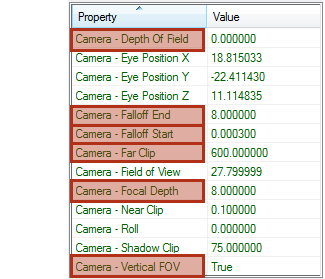

Node: Cameras: SC2 FreeCamera & TargetCamera
The SC2 FreeCamera & SC2 TargetCamera are very similar to 3ds Max's cameras, but with a few extra parameters that are specific to StarCraft II. The difference between the SC2 FreeCamera and the SC2 TargetCamera is that the target camera always looks at a target and the free camera is free. In this document we’re going to mainly focus on these extra parameters. To get more information about common camera parameters like Lens, FOV, Environment Ranges, Clipping Planes, Multi-Pass Effect, Focal Depth, or Sampling go to 3ds Max Help and search for "Common Camera Parameters".
Extra Parameters
Shadow Clip controls where the clipping plane is for shadows. No shadows will draw beyond the distance that you add to this parameter.
-
DOF Amount is the amount of depth of field that is used in a scene and can range from 0.0 to 1.0. Zero being no depth of field and one would be full depth of field.
-
Focal Depth refers to the distance away from the camera where objects are the most in focus or the least blurry. This parameter can be used to make a strong focal point where everything outside of that focal depth starts to get blurry.
-
Falloff Start is where the depth of field starts or the blurring begins.
-
Falloff End is where the depth of field ends or the blurring is at its maximum. Then the blur becomes consistent past the falloff end distance.
-
Use Vertical FOV determines whether the vertical field of view is turned on or off.
This is what those extra parameters look like in the Editor.
